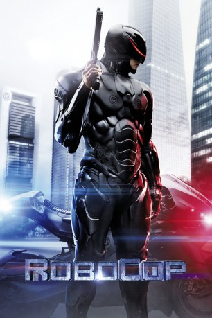

#2715 RoboCop
 gesehen am 07.12.2015
gesehen am 07.12.2015
 
 IMDB-Wertung: 6.2 / 10
IMDB-Wertung: 6.2 / 10  Metascore: 52
Metascore: 52 
Der einfache Polizist Alex Murphy, ein liebender Familienvater und Ehemann der bezaubernden Clara, wird eines Tages während eines Einsatzes mit seinem Partner Jack Lewis schwer verletzt. In einer spektakulären Operation unter Leitung des Wissenschaftlers Dr. Dennett Norton wird Murphy zum Besitz von OmniCorp in seiner Wiederauferstehung als RoboCop. Seines früheren Lebens beraubt lautet die oberste Direktive nun To Serve and to Protect. Der RoboCop wird als kompromissloser Vollstrecker ein unmittelbarer Erfolg, was der Publicity von OmniCorp durchaus förderlich ist. Doch den RoboCop plagen einige ‘Fehlfunktionen’, als sich mit Erinnerungsfetzen sein früheres Ich Alex Murphy zurückmeldet.
Jahr: 2014
Dauer: 117 Minuten
FSK: 12
Land: USA Studio: Columbia PicturesTonspuren: DTS - ,
Untertitel: Deutsch,
Auflösung: 1080p (1920x800) Größe: 6082 MB
Genre: Action, Thriller, Sci-Fi
Regisseur: José Padilha
Drehbuch: Joshua Zetumer, Edward Neumeier, Michael Miner, Edward Neumeier, Michael Miner
Soundtrack: Pedro Bromfman
Darsteller:
 Joel Kinnaman als Alex Murphy / RoboCop
Joel Kinnaman als Alex Murphy / RoboCop Gary Oldman als Dr. Dennett Norton
Gary Oldman als Dr. Dennett Norton Michael Keaton als Raymond Sellars
Michael Keaton als Raymond Sellars Abbie Cornish als Clara Murphy
Abbie Cornish als Clara Murphy Jackie Earle Haley als Rick Mattox
Jackie Earle Haley als Rick Mattox Michael Kenneth Williams als Jack Lewis
Michael Kenneth Williams als Jack Lewis Jennifer Ehle als Liz Kline
Jennifer Ehle als Liz Kline Jay Baruchel als Tom Pope
Jay Baruchel als Tom Pope Marianne Jean-Baptiste als Chief Karen Dean
Marianne Jean-Baptiste als Chief Karen Dean Samuel L. Jackson als Pat Novak
Samuel L. Jackson als Pat Novak Aimee Garcia als Jae Kim
Aimee Garcia als Jae Kim- Douglas Urbanski als Mayor Durant
- John Paul Ruttan als David Murphy
 Patrick Garrow als Antoine Vallon
Patrick Garrow als Antoine Vallon- K.C. Collins als Andre Daniels
 Zach Grenier als Senator Hubert Dreyfus
Zach Grenier als Senator Hubert Dreyfus- Maura Grierson als Kelly
- Stewart Arnott als Senate House Leader
 Steve Cumyn als Ohio Senator
Steve Cumyn als Ohio Senator- Noorin Gulamgaus als Navid
- Marjan Neshat als Sayeh
- Sam Motazedi als Arash
 Adrian Griffin als Man in White Coat
Adrian Griffin als Man in White Coat Melanie Scrofano als Wife of Man with Prosthetics
Melanie Scrofano als Wife of Man with Prosthetics- Kelvin Wheeler als Old Sergeant
- Alex Mallari Jr. als Young Lieutenant
- Tattiawna Jones als Mayor's Assistant
- Jordan Johnson-Hinds als Jerry White
- Evan Stern als Walter Karrel
 Ishan Morris als Armed Sentry at Decrepit House
Ishan Morris als Armed Sentry at Decrepit House- Rory O'Shea als Cop at Armoury
- Stacey Unsworth als Uniformed Cop Outside Station
- Paul Sun-Hyung Lee als Omnicorp Technician
 Thomas Mitchell als Omnicorp Technician
Thomas Mitchell als Omnicorp Technician- Rocky Anderson als Lead Omnicorp Security Agent
 Dalias Blake als Omnicorp Security Agent
Dalias Blake als Omnicorp Security Agent Dean Redman als Omnicorp Exterior Security
Dean Redman als Omnicorp Exterior Security- Demord Dann als Omnicorp Security
- Darcy Hinds als Omnicorp Security
 Kirby Morrow als Co-Pilot
Kirby Morrow als Co-Pilot- Kevin Hare als Rapist
- Carlyn Burchell als Rape Victim
 Markus Parilo als Sweet Man
Markus Parilo als Sweet Man- Aaliyah Cinello als Little Girl
- Sharon Canovas als Woman Hostage , uncredited
 Tommy Chang als Korean Store Owner , uncredited
Tommy Chang als Korean Store Owner , uncredited- Jimmy Chimarios als Robot Drone , uncredited
- Raven Cinello als Mom , uncredited
- Tazito Garcia als Football Player , uncredited
- WBBrown II als AC Freeman , uncredited
Datei: X:\4-Tetralogie(M-Z)\RoboCop\RoboCop (2014, FSK12, 1920x800).mkv seit 06.12.2015
Festplatte: HD Collection-3(N-Z)-6(A-Z)
 Es gibt insgesamt 7 Filme in der Gruppe '4-Tetralogie(M-Z)\RoboCop'
Es gibt insgesamt 7 Filme in der Gruppe '4-Tetralogie(M-Z)\RoboCop'